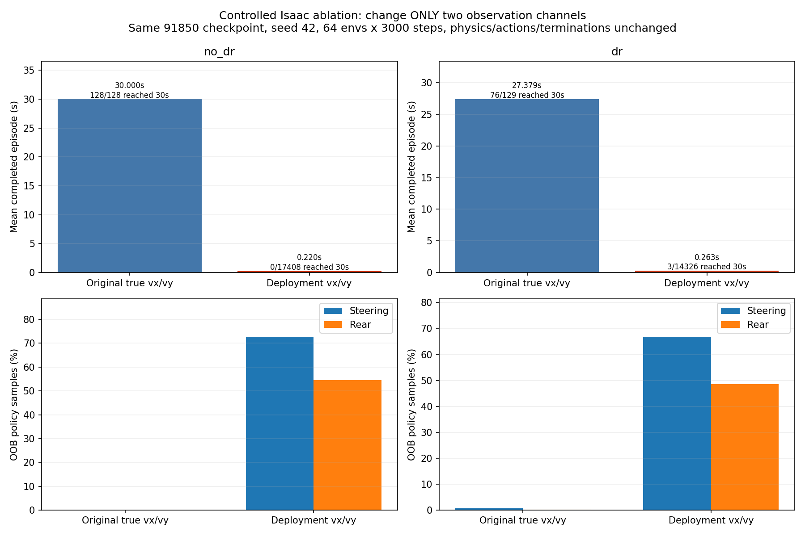
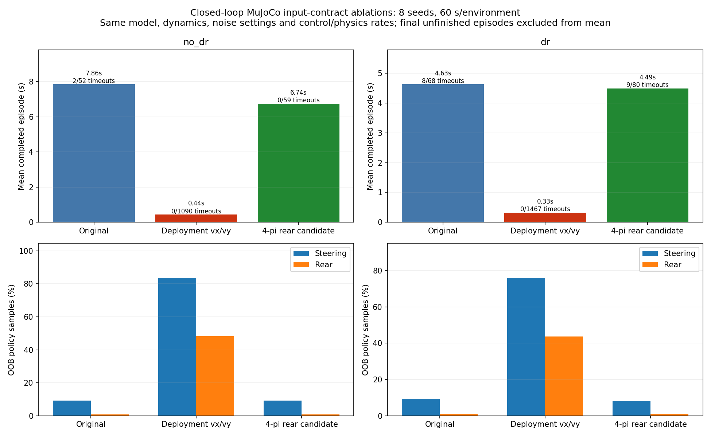
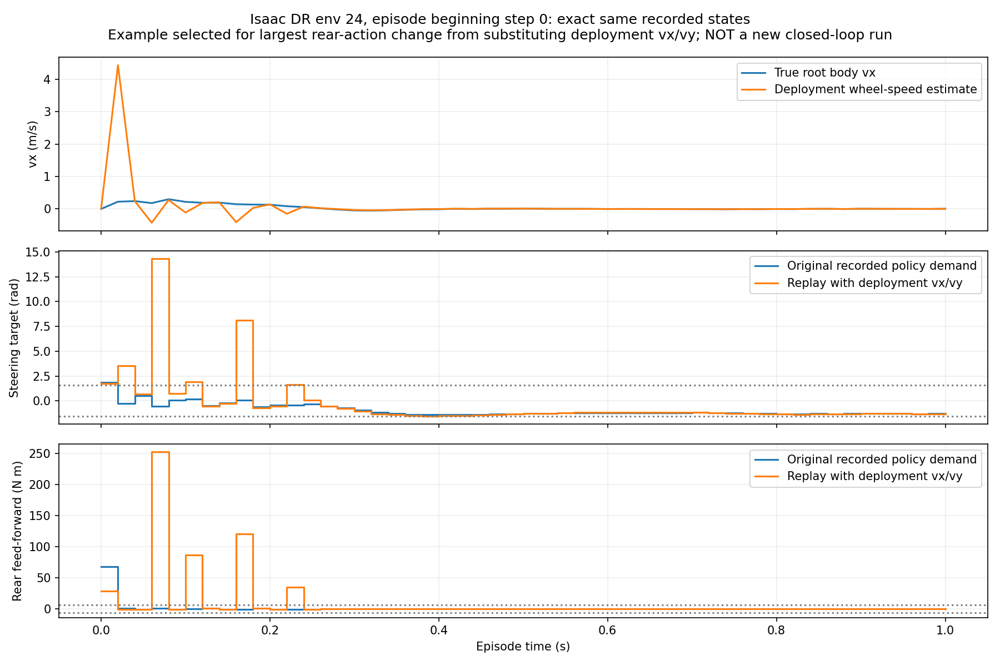
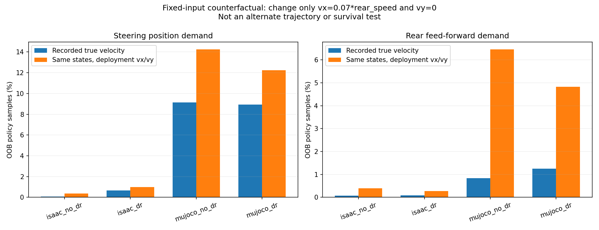
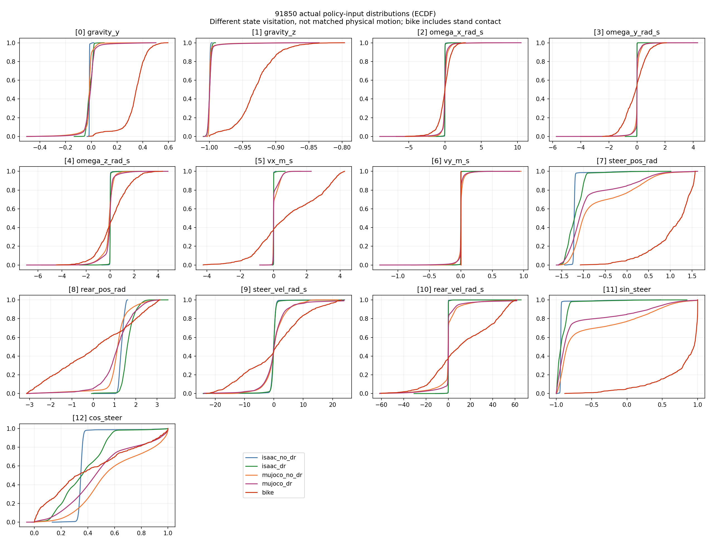
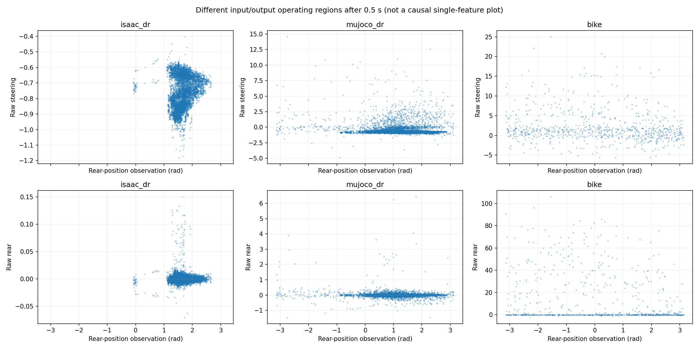

Deployment substitutes vx = 0.07 × rear speed and vy = 0 for privileged simulated root velocities. Controlled experiments change only those two policy inputs. No runtime source, geometry, checkpoint or hardware was changed.

Actual closed-loop Isaac experiments: same policy, seed, dynamics, actions and terminations. Final unfinished episodes are excluded from the mean. Reaching the horizon is different from firing only the fallen termination.

Independent MuJoCo experiments with eight matched seeds. The candidate 4π rear branch is not a fully validated PhysX emulator and did not consistently improve results.

Fixed-input replay, not a new trajectory: original physical motion is held fixed. The example is deliberately selected for largest rear-action change; plotted demands are not delivered motor torque.

All baseline simulation frames, replayed with only vx/vy replaced. Closed-loop divergence is not included in this plot.

Empirical distributions of actual policy inputs. Different state visitation and real-bike stand contact prevent interpreting these as a matched-motion calibration test.

These associations are not single-feature causal effects. The report separately includes an equivalent-angle, fixed-input counterexample and backend probes.